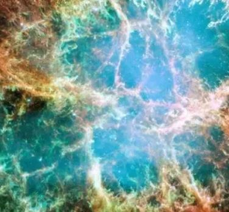

Thermodynamics is essentially the connection between all sources of energy.
One fundamental thing we must know is that energy cannot be destroyed nor created, it can only transfer.
This brings of the question, if energy can't be created destroyed, does that mean that energy existed before the big bang? That could be true to an extent. As we can see, using physics we can predict certain scenerios without actually being there.